eda_normfit generates a fitted Normal distribution to the
data with the option to compare it to a density distribution.
Usage
eda_normfit(
dat,
x = NULL,
grp = NULL,
p = 1,
tukey = FALSE,
show.par = TRUE,
sq = TRUE,
inner = 0.6826,
dens = TRUE,
bw = "SJ-dpi",
kernel = "gaussian",
pch = 16,
size = 0.8,
alpha = 0.3,
p.col = "grey50",
p.fill = "grey80",
grey = 0.7,
col.ends = "grey90",
col.mid = "#EBC89B",
col.ends.dens = "grey90",
col.mid.dens = "#EBC89B",
offset = 0.02,
tsize = 1.5,
xlab = NULL,
ylab = NULL,
...
)Arguments
- dat
Vector of values, or a dataframe.
- x
Column of values if
datis a dataframe, ignored otherwise.- grp
Column of grouping variables if
datis a dataframe, ignored otherwise.- p
Power transformation to apply to all values.
- tukey
Boolean determining if a Tukey transformation should be adopted (
TRUE) or if a Box-Cox transformation should be adopted (FALSE).- show.par
Boolean determining if the power transformation used with the data should be displayed in the plot's upper-right corner.
- sq
Boolean determining if the plot should be square.
- inner
Fraction of values that should be captured by the inner color band of the normal and density plots. Defaults to 0.6826 (inner 68% of values).
- dens
Boolean determining if the density plot should be displayed alongside the Normal fit plot.
- bw
Bandwidth parameter passed to the
density()function.- kernel
Kernel parameter passed to the
density()function.- pch
Point symbol type.
- size
Point side.
- alpha
Fill transparency (0 = transparent, 1 = opaque). Only applicable if
rgb()is not used to define fill colors.- p.col
Color for point symbol.
- p.fill
Point fill color passed to
bg(Only used forpchranging from 21-25).- grey
Grey level to apply to plot elements such as axes, labels, etc... (0 to 1 with 1 = black).
- col.ends
Fill color for ends of the Normal distribution.
- col.mid
Fill color for middle band of the Normal distribution.
- col.ends.dens
Fill color for ends of the density distribution.
- col.mid.dens
Fill color for middle band of the density distribution.
- offset
A value (in x-axis units) that defines the gap between left and right side plots. Ignored if
densisFALSE.- tsize
Size of plot title.
- xlab
X variable label.
- ylab
Y variable label.
- ...
Note used.
Details
This function will generate a (symmetrical) Normal distribution
fitted to the data if dens is set to FALSE or a side-by-side
density/Normal fit plot if dens is set to TRUE. If the
latter, the density plot will be on the left side and the Normal fit will
be on the right side of the vertical axis.
The plots have two fill colors: one for the inner band and the other for
the outer band. The inner band shows the area of the curve that encompasses
the desired fraction of values defined by inner. By default, this
value is 0.6826, or 68.26% (this is roughly the percentage of values
covered by +/- 1 standard deviations of a Normal distribution). For the
Normal fit plot, the range is computed from the theoretical Normal and not
from the actual values. For the density plot, the range is computed from
the actual values.
If a density plot is desired, dens = TRUE, a gap (defined by
offset) is created between the left side density plot and the right
side Normal fit plot. This function makes use of the built-in
stats::density function. As such, you can pass the bw and
kernel parameters as you would for the density() function.
Points showing the location of values along the y-axis are also added to
help view their distributions relative to the density and Normal fit
curves.
Measures of centrality are computed differently for the Normal fit and
density plots. The mean is computed for the Normal fit plot and the median
is computed for the density plot. These measures of centrality are shown as
black horizontal lines in the plot.
The areas under the density and Normal fit plots are scaled to their
peak values, respectively. So, the areas should not be compared between
both distributions.
Examples
# Explore a skewed distribution
set.seed(218)
x <- rexp(500)
# Generate base histogram
hist(x)
 # Plot density/Normal fit plot
eda_normfit(x)
eda_normfit(x)
# Plot density/Normal fit plot
eda_normfit(x)
eda_normfit(x)
 # Limit the plot to just a Normal fit
eda_normfit(x, dens = FALSE)
#>
#> !!!!!!!!!!!!!!!!!!!!!!!!
#> Note that this is not a density plot.
#> It's the Normal characterization of the data
#> using the data's standard deviation.
#> !!!!!!!!!!!!!!!!!!!!!!!!
#>
# Limit the plot to just a Normal fit
eda_normfit(x, dens = FALSE)
#>
#> !!!!!!!!!!!!!!!!!!!!!!!!
#> Note that this is not a density plot.
#> It's the Normal characterization of the data
#> using the data's standard deviation.
#> !!!!!!!!!!!!!!!!!!!!!!!!
#>
 # The inner band's range can be modified. Here, we view the interquartile
# range, the +/- 1 standard deviation range and the inner 95% range)
OP <- par(mfrow = c(1,3))
invisible(sapply(c(0.5, 0.6826, 0.95),
function(prop) eda_normfit(x, inner = prop, tsize = 1,
ylab = paste(prop*100,"% of values"))))
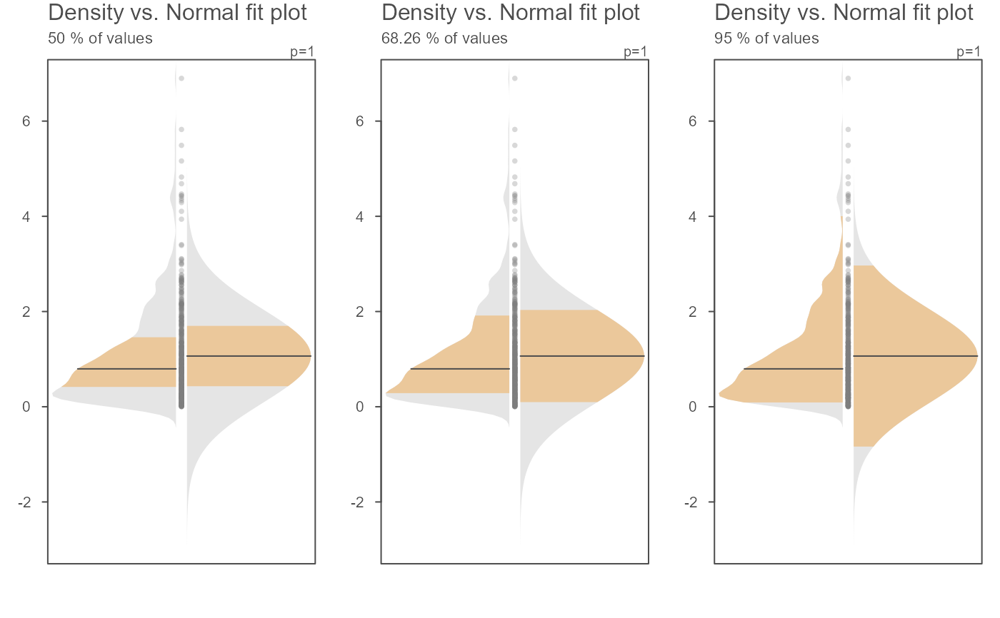
par(OP)
# The bandwidth selector can also be specified
OP <- par(mfrow=c(2,3))
invisible(sapply(c("SJ-dpi", "nrd0", "nrd", "SJ-ste", "bcv", "ucv" ),
function(band) eda_normfit(x, bw = band, tsize=0.9, size=0, offset=0.005,
ylab = band)))
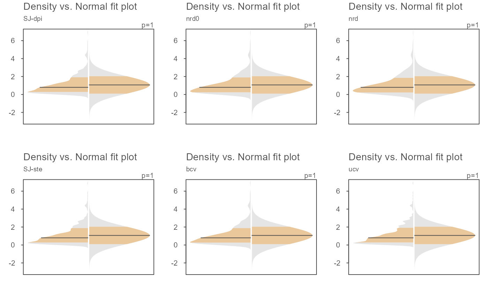
par(OP)
# The bandwidth argument can also be passed a numeric value
OP <- par(mfrow=c(1,3))
invisible(sapply(c(0.2, 0.1, 0.05 ),
function(band) eda_normfit(x, bw = band, tsize=1,size=.5, offset=0.01,
ylab = band)))
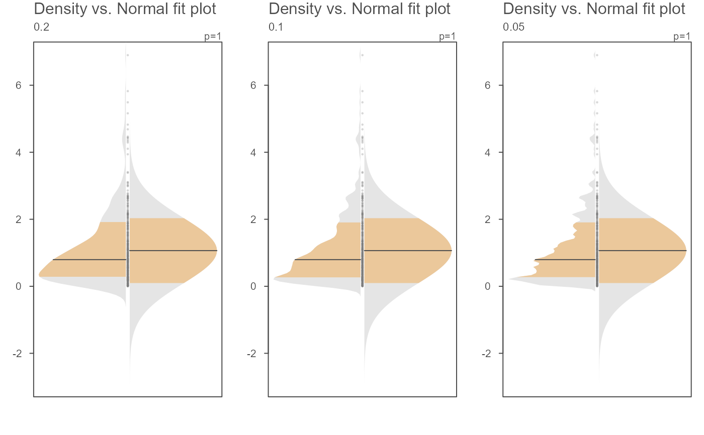
par(OP)
# Examples of a few kernel options
OP <- par(mfrow=c(1,3))
invisible(sapply(c("gaussian", "optcosine", "rectangular" ),
function(k) eda_normfit(x, kernel = k, tsize=1, size=.5, offset=0.01,
ylab = k)))
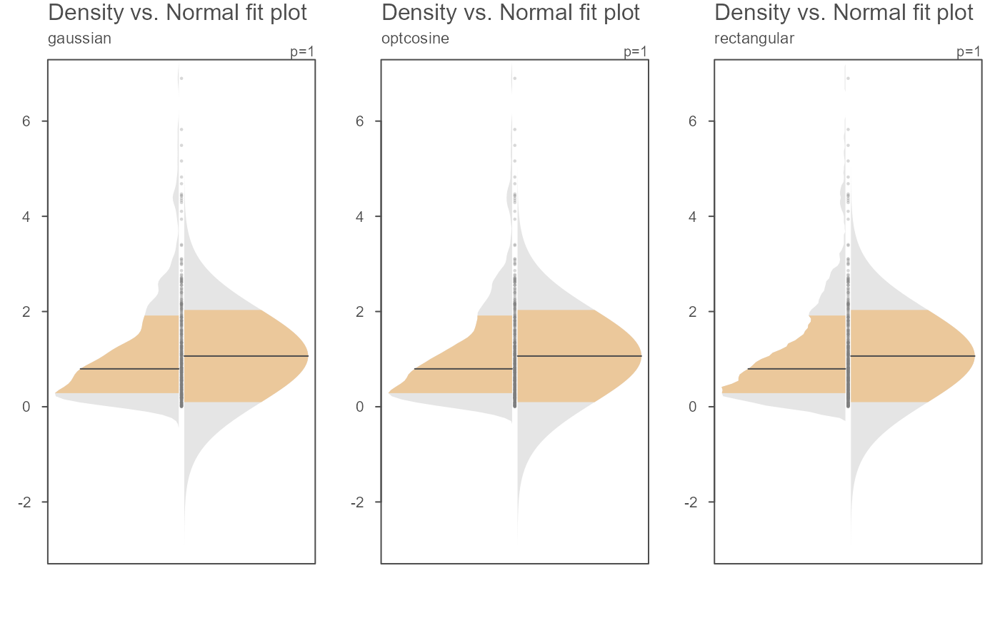
par(OP)
# Another example where data are passed as a dataframe
set.seed(540)
dat <- data.frame(value = rbeta(20, 1, 50),
grp = sample(letters[1:3], 100, replace = TRUE))
eda_normfit(dat, value, grp)
# Points can be removed and the gap rendered narrower
eda_normfit(dat, value, grp, size = 0, offset = 0.01)
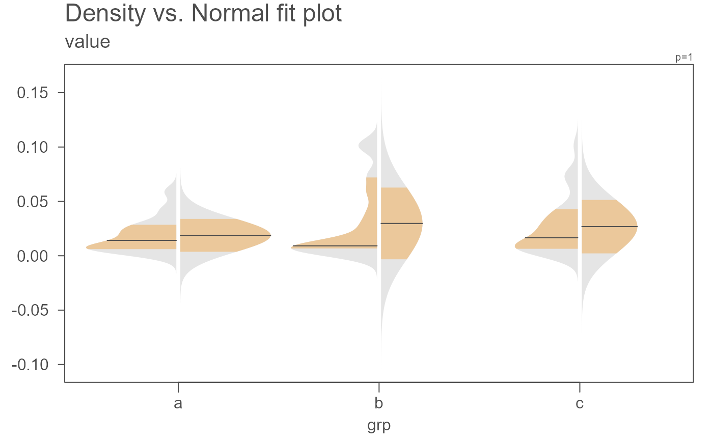
# Color can be modified. Here we modify the density plot fill colors
eda_normfit(dat, value, grp, size = 0, offset = 0.01,
col.ends.dens = "#A1D99B", col.mid.dens = "#E5F5E0")
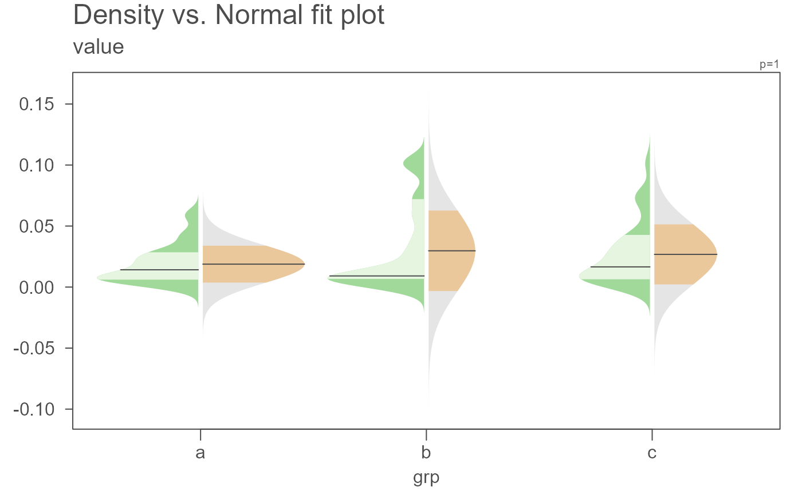
# A power transformation can be applied to the data. Here
# we'll apply a log transformation
eda_normfit(dat, value, grp, p = 0)
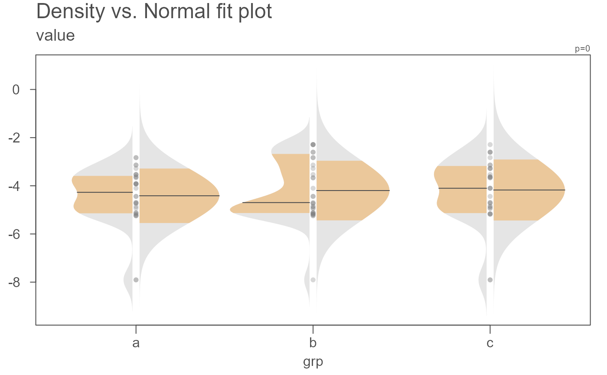
# The inner band's range can be modified. Here, we view the interquartile
# range, the +/- 1 standard deviation range and the inner 95% range)
OP <- par(mfrow = c(1,3))
invisible(sapply(c(0.5, 0.6826, 0.95),
function(prop) eda_normfit(x, inner = prop, tsize = 1,
ylab = paste(prop*100,"% of values"))))
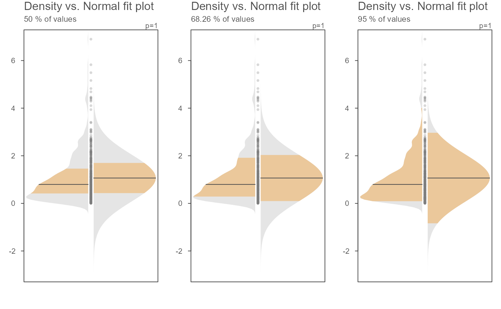
par(OP)
# The bandwidth selector can also be specified
OP <- par(mfrow=c(2,3))
invisible(sapply(c("SJ-dpi", "nrd0", "nrd", "SJ-ste", "bcv", "ucv" ),
function(band) eda_normfit(x, bw = band, tsize=0.9, size=0, offset=0.005,
ylab = band)))
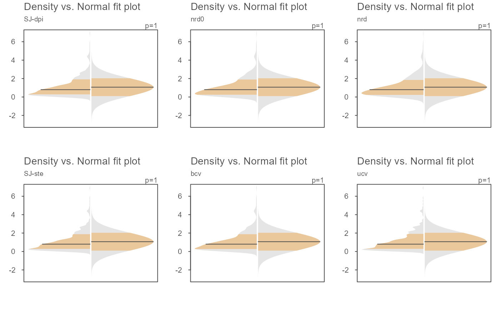
par(OP)
# The bandwidth argument can also be passed a numeric value
OP <- par(mfrow=c(1,3))
invisible(sapply(c(0.2, 0.1, 0.05 ),
function(band) eda_normfit(x, bw = band, tsize=1,size=.5, offset=0.01,
ylab = band)))
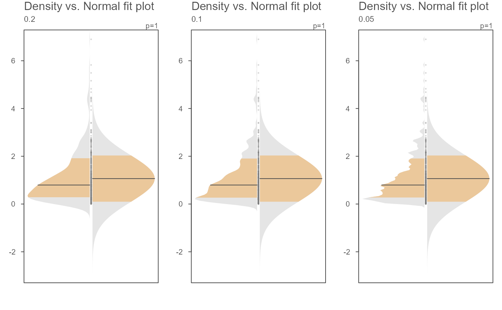
par(OP)
# Examples of a few kernel options
OP <- par(mfrow=c(1,3))
invisible(sapply(c("gaussian", "optcosine", "rectangular" ),
function(k) eda_normfit(x, kernel = k, tsize=1, size=.5, offset=0.01,
ylab = k)))
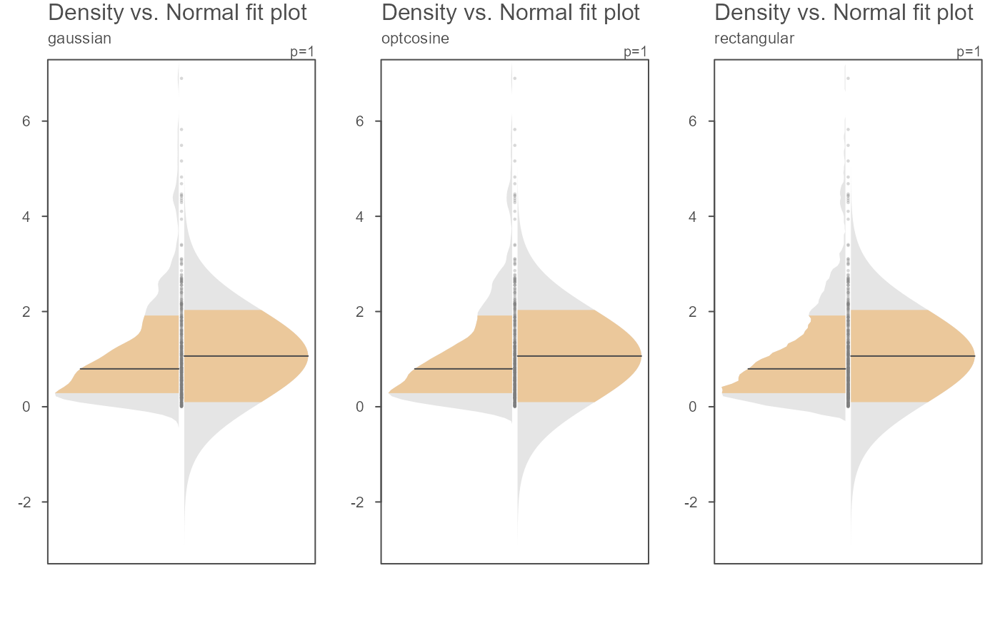
par(OP)
# Another example where data are passed as a dataframe
set.seed(540)
dat <- data.frame(value = rbeta(20, 1, 50),
grp = sample(letters[1:3], 100, replace = TRUE))
eda_normfit(dat, value, grp)
# Points can be removed and the gap rendered narrower
eda_normfit(dat, value, grp, size = 0, offset = 0.01)
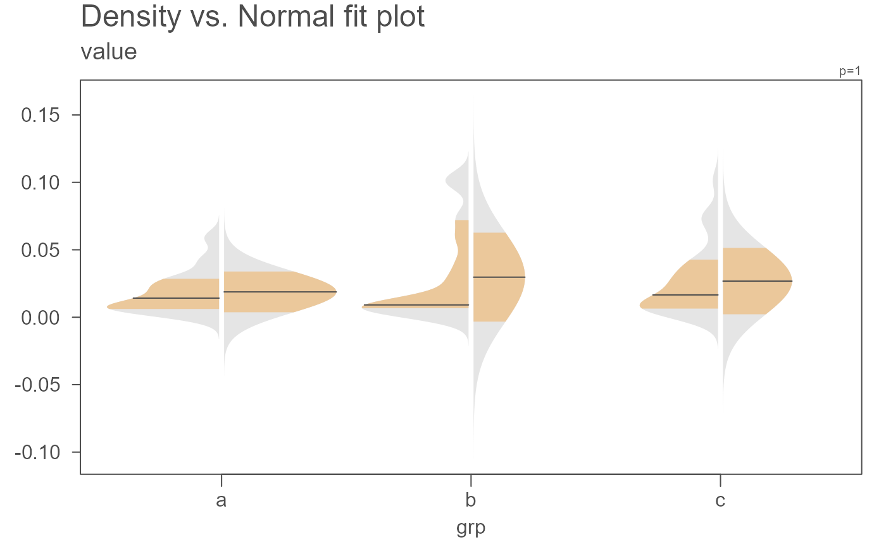
# Color can be modified. Here we modify the density plot fill colors
eda_normfit(dat, value, grp, size = 0, offset = 0.01,
col.ends.dens = "#A1D99B", col.mid.dens = "#E5F5E0")
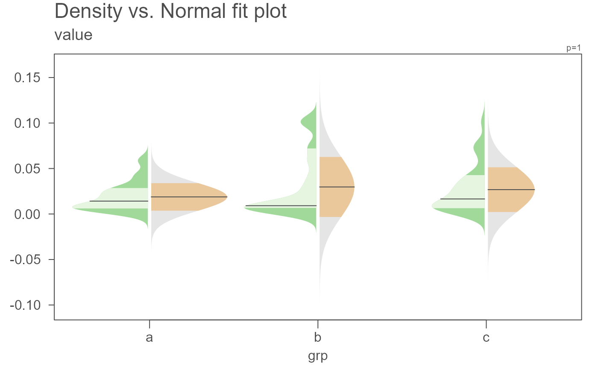
# A power transformation can be applied to the data. Here
# we'll apply a log transformation
eda_normfit(dat, value, grp, p = 0)
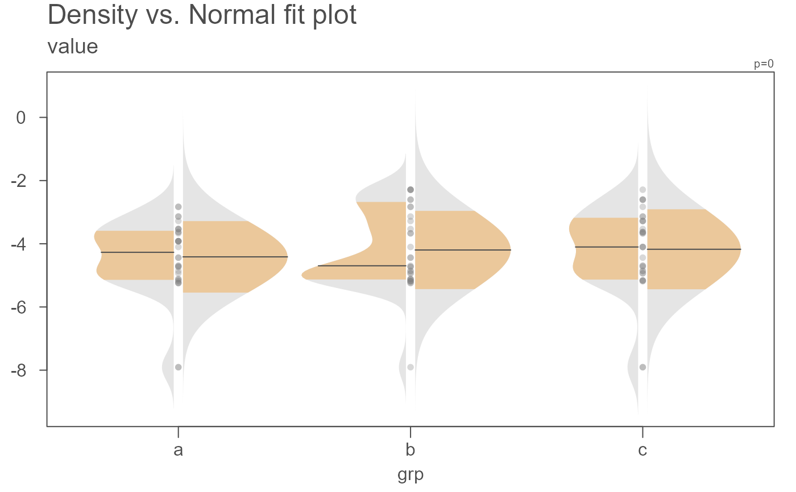